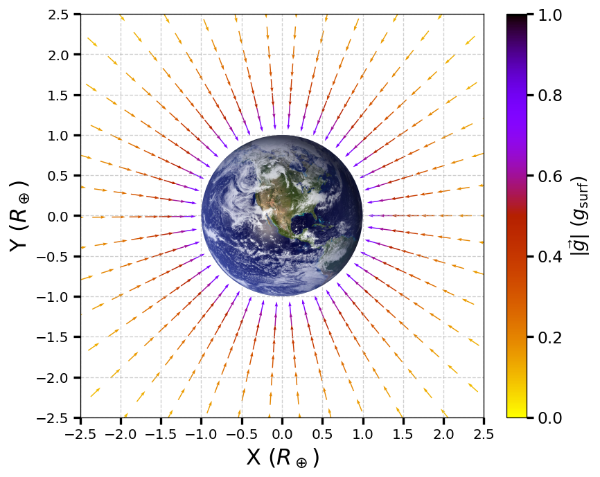
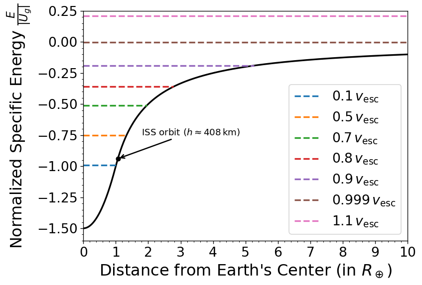
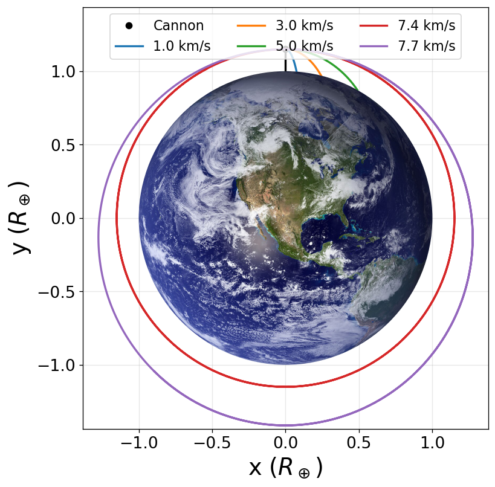
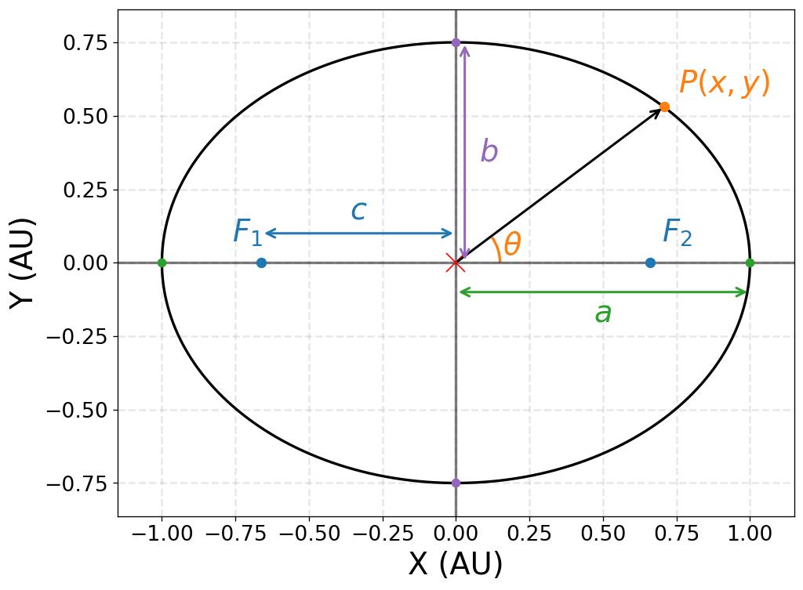
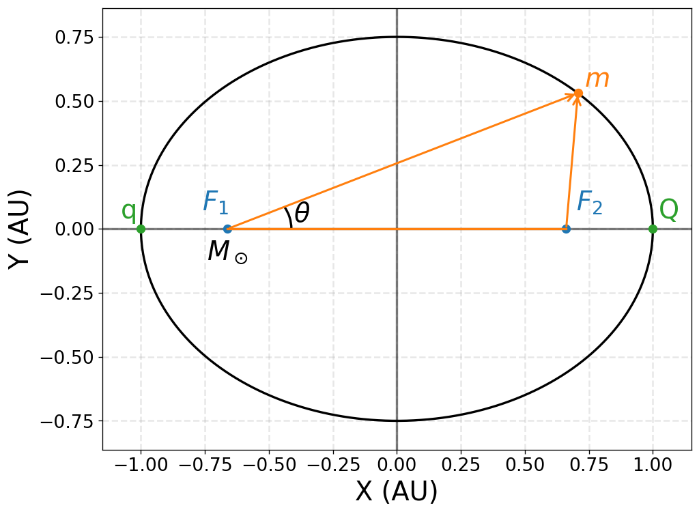

13. Gravitation#
Apr 04, 2026 | 8445 words | 42 min read
13.1. Newton’s Law of Universal Gravitation#
13.1.1. The History of Gravitation#
The earliest philosophers wondered why objects naturally tend to fall toward the ground. Aristotle believed that the natural state of some objects to seek the Earth, while others (e.g., fire) would float away and seek Heaven instead. Almost a millennium later, Brahmagupta described an attractive force that caused all objects to fall toward the center of a spherical Earth.
The motions of the Sun, Moon, and the planets were studied for thousands of years before an accurate model was developed. About 2000 years ago, Ptolemy used the method of epicycles, which proved to be an accurate method given the technological sophistication of making the measurements. Although several scholars may have developed ideas about an inward seeking force or the motions of astronomical bodies, there is little evidence that anyone had synthesized these ideas together into a single framework until the 17th century (i.e., 1600-1700 AD).
The idea of heliocentrism (e.g., the Sun is at the center of the Solar System) was introduced (at least) by the 3rd century BC by Aristarchus of Samos. For many years, scholars paid little attention to the idea because the could not reconcile a moving Earth with the absence of an observable parallax. Therefore, Ptolemy’s geocentric model held sway until the 16th century, when Nicolaus Copernicus proposed a mathematical model of a heliocentric system and estimated the distances for each of the planets to the Sun, albeit on assumed circular orbits. Copernicus’ ideas were initially supported by religious figures at the time, but eventually (about a century later) ran in contrast to the Catholic church’s teachings.
Tycho Brahe attempted to develop a hybrid geocentric-heliocentric model but did not finish before his death. Prior to his demise, he employed Johannes Kepler as a research assistant. Brahe assigned Kepler the so-called ‘Mars problem’ as an attempt to stall Kepler from overshadowing him. However, Kepler would develop his laws of planetary motion (in 1609 (1st and 2nd) and 1619 (3rd)) that largely corrected the Copernican model use ellipses instead of circles for the orbits. At the same time (~1610) Galileo was using his ‘telescope’ to observe the heavens and discovering that Jupiter hosted 4 moons of its own. Western European natural scientists could develop a model that predicted the location of the planets with higher accuracy, however they had no mathematical description to explain why the planets moved around the Sun.
It was Isaac Newton who connected the acceleration of objects near Earth’s surface with the centripetal acceleration of the planets around the Sun (i.e., gravity). To accomplish this feat, Newton had to largely invent new domains of study, which included calculus and by its application mechanics. He also made ground-breaking discoveries in his day for the field of optics and thermodynamics. He developed a numerical algorithm that is efficient in solving some problems (e.g., root-finding or solving transcendental equations) that is still used today in modern-computing, Newton-Raphson method.
13.1.2. Newton’s Law of Universal Gravitation (Defined)#
Newton noted that objects at Earth’s surface (at a distance \(R_\oplus\) from Earth’s center) have an acceleration of \(g\). However, at a distance of \(60\ R_\oplus\), the Moon has a centripetal acceleration about \((60)^2\) times smaller than \(g\). He explained this by postulating that a force exists between any two objects, whose magnitude is given by the product of the two masses divided by the square of the distance between them.
There exists a category of phenomena in nature that are explained by so-called ‘inverse-square law’, or a decrease in magnitude that increases with the inverse-square of the distance. We now know that this is a function of geometry and how the surface of a sphere increases with distance, which dilutes the strength of a source that has spherical symmetry. The surface area of a sphere is \(4\pi r^2\), so we see that if there is a source with a strength \(S\), then it scales as \(S/r^2\) (i.e., an inverse-square law).
Newton’s Law of Gravitation
Newton’s law of gravitation can be expressed as a vector by
where \(\vec{F}_{12}\) is the force between object 1 exerted by object 2 and \(\hat{r}_{12}\) is the radial unit vector that points from object 1 toward object 2.
Fig. 13.1 Image Credit: Openstax.#
Figure 13.1 shows how \(\vec{F}_{12}\) describes as an attractive force pulling object 1 toward object 2. However, there is an equal but opposite force \(vec{F}_{21}\) directed from object 2 toward object 1, \(\vec{F}_{12} = -\vec{F}_{21}\).
These equal but opposite forces reflect Newton’s 3rd law. Newton’s law of gravitation (as expressed) applies to any spherically symmetric object, where \(r\) is the distance each object’s center-of-mass. This also implicitly assumes that the individual radii of the masses (\(R\)) is much smaller than the distance between the objects (\(R\ll r\)). In many cases, Newton’s formulation still works for nonsymmetrical objects due to \(R\ll r\).
13.1.3. The Cavendish Experiment (measuring \(G\))#
A century after Newton published his law of universal gravitation, Henry Cavendish determined the proportionality constant \(G\) by performing a very difficult experiment using a device with two masses connected by a rod that is itself suspended by a wire (see Figure 13.2). The wire also had a mirror that redirected the light from a fixed source. The masses on the rod were placed near two stationary masses, where the torque from the gravitation force between the spheres would twist the wire and change the angle of reflection for the light hitting the mirror. Therefore, the reflected light would change position on the fixed scale.
Fig. 13.2 Image Credit: Openstax.#
The constant \(G\) is called the universal gravitational constant and Cavendish determined it as \(G = 6.67 \times 10^{-11}\ {\rm N\cdot m^2/kg^2}\). The word ‘universal’ indicates that scientists think that this constant applies to masses of any composition and that it is the same throughout the Universe. The value of \(G\) (in SI units) is an incredibly small number, which shows that the force of gravity is very weak. For example, two \(1\ {\rm kg}\) masses locates a meter apart exert a force of \(7 \times 10^{-11}\ {\rm N}\) on each other.
Note
The value of \(G\) given here depends on the units used (i.e., SI units). However, if you choose to work in a different (sometimes more convenient) set of units, then you could determine \(G\) to a easy magnitude to remember. In orbital mechanics, researchers will often use a magnitude of \(G\) so that it equals \(1\) or \(4\pi^2\), but you must reconcile the units appropriately.
Although gravity is the weakest force compared to the other three fundamental forces of nature, its attractive force holds us to the Earth, causes the planets to orbit the Sun, and the Sun to orbit our Galaxy. It goes even further to bind galaxies into clusters and is the force that determines the fate of the Universe.
Problem-Solving Strategy
Newton’s Law of Gravitation
To determine the motion caused by the gravitational force:
Identify the two masses.
Draw a free-body diagram, sketch the force acting on each mass, and indicate the distance between their respective center-of-mass.
Apply Newton’s 2nd law of motion to each mass to determine how it will move.
13.1.4. Example Problem: Collision in Orbit#
13.1.5. Example Problem: Attraction between Galaxies#
13.2. Gravitation Near Earth’s Surface#
13.2.1. Weight#
Recall that the acceleration of a free-falling object near Earth’s surface is approximately \(9.81\ {\rm m/s^2}\). The force causing this acceleration is called the weight of the object, where we previously found that it has a value \(w=mg\) from Newton’s 2nd law. The weight is present regardless of whether the object is in free fall or not.
We now know the weight is caused by the gravitational force between the object of mass \(m\) and the Earth of mass \(M_\oplus\). If we equate the measured weight with the expected gravitational force, we can arrive at a scalar equation because both forces act in the same radial direction \(\hat{r}\). The scalar equation is given as
where \(r = R_\oplus + h\) is the distance between the Earth and the object in terms of their respective center-of-mass. Using the second equation, we can see that the mass \(m\) is on both sides and can cancel, leaving
The standard mean radius of the Earth is \(6371\ {\rm km}\). For objects within a few kilometers of Earth’s surface, we can take \(r = R_\oplus + h \approx R_\oplus\) because \(h\ll R_\oplus\). From Exercise 9.14, we can see that the center-of-mass (see Fig. 13.3) of a low mass (compared to the Earth itself) object with the Earth would essentially still be at the Earth’s center. As a result, we can ignore the fact that the Earth accelerates toward the falling object.
Fig. 13.3 Image Credit: Openstax.#
13.2.1.1. Example Problem: Mass of the Earth#
13.2.2. The Gravitational Field#
Equation (13.3) is a scalar equation, but we could have retained the vector form for the force of gravity and written the acceleration in vector form (in general) as
We identify the vector field represented by \(\vec{g}\) as the gravitational field caused by mass \(M\). Figure 13.4 illustrates the gravitational field around the Earth showing the lines are directed radially inward, symmetrically about the Earth, and color-coded relative to \(g_{\rm surf} = 9.81\ {\rm m/s^2}\).

Fig. 13.4 Gravitational field around Earth shown in units of \(R_\oplus\) and \(g_{\rm surf}\).#
Show code cell content
import numpy as np
import matplotlib.pyplot as plt
from matplotlib.colors import Normalize
from matplotlib import rcParams
from matplotlib.patches import Circle
from myst_nb import glue
from PIL import Image
import requests
from io import BytesIO
rcParams.update({'font.size': 16})
G = 4*np.pi**2
M = 3.003e-6 #mass of Earth (in M_sun)
R_earth = 4.26e-5 #Radius of Earth (in AU)
fs = 'large'
lim = 2.3
n = 20
r_vals = np.geomspace(1.15, 5.0, 14)
theta_vals = np.arange(0, 2*np.pi, 0.16)
pts = []
for r in r_vals:
ntheta = max(8, int(40 / np.sqrt(r)))
thetas = np.arange(0, 2*np.pi, 0.15)
for th in thetas:
pts.append((r*np.cos(th), r*np.sin(th)))
pts = np.array(pts)
Xr, Yr = pts[:, 0], pts[:, 1]
X = Xr * R_earth
Y = Yr * R_earth
R = np.sqrt(X**2 + Y**2)
Rr = np.sqrt(Xr**2 + Yr**2)
mask = Rr >= 1
gx = np.zeros_like(X)
gy = np.zeros_like(Y)
np.divide(-G*M*X, R**3, out=gx, where=mask)
np.divide(-G*M*Y, R**3, out=gy, where=mask)
g0 = G*M / R_earth**2
gx /= g0
gy /= g0
gmag = np.sqrt(gx**2 + gy**2)
ux = np.zeros_like(gx)
uy = np.zeros_like(gy)
np.divide(gx, gmag, out=ux, where=mask)
np.divide(gy, gmag, out=uy, where=mask)
ux[~mask] = np.nan
uy[~mask] = np.nan
gmag[~mask] = np.nan
fig = plt.figure(figsize=(7, 7),dpi=120)
ax = fig.add_subplot(111)
ax.grid(True,ls='--',alpha=0.6,zorder=2)
norm = Normalize(vmin=0, vmax=1)
q = ax.quiver(Xr, Yr, ux, uy, gmag, pivot='mid', scale=30, cmap='gnuplot_r',norm=norm)
cbar = fig.colorbar(q, ax=ax, fraction=0.055, pad=0.05, shrink=0.9)
cbar.set_label(r'$|\vec{g}|\ (g_{\rm surf})$')
cbar.ax.tick_params(axis='both', which='major', labelsize=14, length=6, width=2)
#Clip Earth image from Wikipedia to a circle
img = plt.imread("Earth_Western_Hemisphere.jpg")
img = np.asarray(img)
# Create alpha channel: make near-black pixels transparent
threshold = 20
mask = np.all(img < threshold, axis=-1)
rgba = np.dstack((img, np.ones(img.shape[:2]) * 255))
rgba[mask, 3] = 0 # set alpha=0 where black
img = rgba.astype(np.uint8)
# draw image so it fills the square from x=-1..1 and y=-1..1
im = ax.imshow(img, extent=[-1.15, 1.15, -1.15, 1.15], zorder=5)
# clip the image to a circle of radius 1 centered at (0, 0)
clip = Circle((0, 0), 1, transform=ax.transData)
im.set_clip_path(clip)
# optional: add a visible circular edge
# edge = Circle((0, 0), 1, facecolor='none', edgecolor='black', linewidth=1.5, zorder=6)
# ax.add_patch(edge)
ax.set_xlim(-lim, lim)
ax.set_ylim(-lim, lim)
ax.set_aspect('equal')
ax.set_xlabel(r'X ($R_\oplus$)',fontsize=fs)
ax.set_ylabel(r'Y ($R_\oplus$)',fontsize=fs)
ax.set_xticks(np.arange(-2.5,3,0.5))
ax.set_yticks(np.arange(-2.5,3,0.5))
#ax.minorticks_on()
ax.tick_params(axis='both', which='minor', length=4, width=1)
ax.tick_params(axis='both', which='major', labelsize=12, length=6, width=2);
glue("grav_field_2d", fig, display=False);
The direction of \(\vec{g}\) is parallel to the field lines at any point, where the strength of \(\vec{g}\) at any point is inversely proportional to the line spacing. In other words, the magnitude of the field in any region is proportional to the number of lines that pass through a unit surface area, effectively a density of lines.
Since the lines are equally spaced in angle \(\theta\), the number of lines per unit surface area at a distance \(r\) from the Earth is the total number of lines divided by the surface area of a sphere of radius \(r\), which is proportional to \(r^2\). Hence, you expect nearby lines to increase in spacing between the lines and along a single radial line.
In the field picture, we say that a mass \(m\) interacts with the gravitational field of mass \(M\).
13.2.3. Apparent Weight: Accounting for Earth’s Rotation#
Objects moving at constant speed in a circle have a centripetal acceleration directed toward the center of that circle. This means that there must be a net force directed toward the center of that circle. Since all objects on the surface of the Earth move through a circle every 24 hours, there must be a net centripetal force on each object.
Let’s first consider an object of mass \(m\) located at the equator, suspended from a scale (see Fig. 13.5). The scale exerts an upward force \(\vec{F}_{\rm SE}\) away from the Earth’s center. This is the reading on the scale, and is the apparent weight of the object. The weight \(mg\) points toward the Earth’s center. If Earth were not rotating, the acceleration would be zero, and the net force would be zero (i.e., \(F_s = mg\)).
Fig. 13.5 Image Credit: Openstax.#
With rotation, the sum of these forces must provide the centripetal acceleration \(a_c\). Using Newton’s 2nd law, we have
The centripetal acceleration \(a_c = -\frac{v^2}{r}\) points in the same direction as the weight; hence, it is negative. The tangential speed \(v\) is the speed at the equator and \(r = R_\oplus\).
We can calculate the speed simply by noting that objects on the equator travel the circumference of Earth in 24 hours. Recall that the tangential speed is related to the angular speed \(\omega\) by \(v = r\omega\), and \(a_c = -r\omega^2\). Therefore, we can write the force in terms of the angular speed by
The angular speed of Earth everywhere is
Substituting \(R_\oplus = 6371\ {\rm km}\) and \(\omega = 7.27 \times 10^{-5}\ {\rm rad/s}\) into the formula for the centripetal acceleration results in \(a_c = 0.0337\ {\rm m/s^2}\). This is only \(0.34\%\) of the surface gravity, so it is clearly a small correction.
Consider a more rapidly spinning Earth (e.g., \(12\ {\rm hr}\)), then this correction increases only to \(1.36\%\). For this correction to be large, the Earth needs to be larger and rapidly rotating. The surface gravity of Saturn is \({\sim}9.8\ {\rm m/s^2}\) at the edge of its atmosphere and rotating in about \(10.5\ {\rm hr}\). The centripetal acceleration would be \({\sim}50\times\) larger, which contributes to its slightly squashed appearance.
13.2.3.1. Example Problem: Zero Apparent Weight#
13.2.4. Results Away from the Equator#
At the pole, \(a_c \rightarrow 0\) and \(F_{\rm SN} = F_{\rm SS} = mg\) (see Fig. 13.5), just as is the case without rotation. At any other latitude \(\lambda\), the situation is more complicated.
The centripetal acceleration is directed toward point \(P\) in Fig. 13.5, which is the \(z\) distance from the center and the radius becomes \(r = R_\oplus \cos{\lambda}\). The vector sum of the weight and \(\vec{F}_s\) must point toward point \(P\), hence \(\vec{F}_s\) no longer points away from the center of Earth.
A plumb bob will always point along this deviated direction. All buildings are built aligned along this deviated direction, not along a radius through the center of Earth. For the tallest buildings, this represents a deviation of a few feet at the top.
The Earth is not a perfect sphere, where it has a bulge at the equator due to its rotation. The radius of the Earth is about \(30\ {\rm km}\) greater at the equator compared to the poles. There is a difference in your weight due to the rotation depending on your latitude, although this difference is small.
13.2.5. Gravity Away from the Surface#
The law of gravitation applies to spherically symmetric objects, but it also valid for symmetrical mass distributions and only valid for values \(r\geq R_\oplus\).
For \(r<R_\oplus\), our formulation of gravity is not valid nor is our acceleration due to gravity \(g\). However, we can determine \(g\) using a principle that comes from Gauss’ law. A consequence of Gauss’ law, applied to gravitation, is that only the mass within \(r\) contributes to the gravitational force. Also the mass interior to \(r\) can be considered to be located at the center. The gravitational effect of the mass outside \(r\) has zero net effect.
Two special cases occur:
The first considers a spherical planet with constant density, the mass within \(r\) is found by the product of the density and the volume within \(r\). The mass can be considered located at the center. We can replace the mass \(M_\oplus\) with the mass within \(r\), or \(M_r\). Then, we have
The value of \(g\) (and hence your weight) decreases linearly as you descend down a hole into the center of the Earth. At the center you are weightless, as teh mass of the planet pulls equally in all directions.
Actually Earth’s density is not constant, not is Earth solid throughout. Figure 13.6 shows the profile of \(g\) if Earth had constant density, as well as the more likely profile based upon density determined from seismic data.
Fig. 13.6 Image Credit: Openstax.#
The second interesting case concerns living on a spherical shell planet. This scenario has been proposed in many science fiction stories. Ignoring significant engineering issues, the shell could be constructed with a desired radius and total mass to mimic Earth’s surface gravity \(g\).
13.3. Gravitational Potential Energy and Total Energy#
13.3.1. Gravitational Potential Energy beyond Earth#
The usefulness of work and potential energy is the ease with which we can solve many problems using conservation of energy. Potential energy is particularly useful for forces that change with position, as the gravitational force varies over large distances.
We showed (in Chapter 8) that the change in gravitational potential energy near Earth’s surface is \(\Delta U = mgh\). This works ver well if \(g\) does not change significantly over \(h\) (or, \(h\ll R_\oplus\)).
Recall that the work \(W\) is the integral of the dot product between force and distance. It is the product of a force along a displacement with that displacement. We define \(\Delta U\) as the negative of the work done by the force that we associate with the potential energy. For clarity we derive an expression for moving a mass \(m\) from a distance \(r_1\) to a distance \(r_2\).
Fig. 13.7 Image Credit: Openstax.#
In Fig. 13.7, we take \(m\) from a distance \(r_1\) to a distance \(r_2\), where both radii are measured relative to Earth’s center. Gravity is a conservative force, so we can take any path we wish and the result for the calculation of the work is the same. Therefore,
we first move radially outward from \(r_1\) to \(r_2\), and then,
move along an arc until we reach the final position.
During the radial portion (move 1), \(\vec{F}\) is opposite to the direction owe travel along \(d\vec{r}\), so
Along the arc, \(\vec{F}\) is perpendicular to \(d\vec{r}\), so \(\vec{F}\cdot d\vec{r} = 0\). No work is done as we move along the arc. Using the expression for the gravitational force and noting the values for \(\vec{F}\cdot d\vec{r}\) along the two paths we have
Since \(\Delta U = U_2 - U_1\), we can adopt a simple expression for the potential energy function \(U(r)\):
Note
There are two import details with this definition.
Consider when \(U\rightarrow 0\) as \(r\rightarrow \infty\). The potential energy is zero when the masses are infinitely far apart. Only the difference in \(U\) is important, so the choice of \(U= 0\) for \(r=\infty\) is merely one of convenience.
Note that \(U\) becomes increasingly more negative as the masses get closer. AS the two masses are separated positive work must be done against the force of gravity, and hence \(U\) increases (becomes less negative). All masses naturally fall together under the influence of gravity, falling from a higher to a lower potential energy.
13.3.1.1. Example Problem: Lifting a Payload#
13.3.2. Conservation of Energy#
In Chapter 8, we described how to apply conservation of energy for systems with conservative forces. We solved some problems involving gravity using the conservation of energy, where similar principles and strategies can be applied here. The only change is use the more general expression for the gravitational potential energy function \(U(r)\), or
Note
We use \(m_2\) instead of \(M_\oplus\) and \(m_1\) rather than \(m\) to generalize beyond Earth-based problems. However, we still assume that \( m_1 \ll m_2\). When this is not true, we can use the conservation laws of energy and momentum to relate the velocities \(v_1\) and \(v_2\) to each other.
13.3.2.1. Escape velocity#
The minimum initial velocity of an object where it can escape the surface of a large body (i.e., the Earth) is called the escape velocity. We assume that no energy is lost to an atmosphere, so this just the ideal case.
Consider an object with a positive launch velocity directed away from the Earth. With the minimum velocity needed for escape, the object would come to rest once it is infinitely far away (i.e., where the force of gravity becomes negligible or the gravitational potential \(U(r)\) goes to zero). Since \(\displaystyle \lim_{r\rightarrow \infty} U_g(r) = 0\), this means that the total energy is also zero.
Thus, we find the escape velocity from the surface of an astronomical body of mass \(m_2\) and radius \(R\) by setting the total energy equal to zero. At the surface of the body, the object is located at \(r_{12}^i = R\) and it has an escape velocity \(v_1^i = v_{\rm esc}\). It reaches \(r_{12}^f = \infty\) with a velocity \(v_1^f = 0\). Substituting into our conservation of energy equation, we have
The escape velocity is the same for all objects, as long as \(m_2 \gg m_1\). In the special case of similar mass objects (i.e., \(m_1 \sim m_2\)), then we have
and both objects are escaping from an effective total mass that lies at the center-of-mass. In both cases, we are not restricted to the surface of a planet, where \(R\) can be any starting point beyond the surface of the bodies.
13.3.2.2. Energy and gravitationally bound objects#
Escape velocity can be defined as the initial velocity of an object that can escape surface of a body (e.g., a moon or planet). More generally, it is the speed at any position such that the total energy is zero. If the total energy is zero or greater the object escapes. If the total energy is negative the object cannot escape.
The figure below shows the gravitational potential (in black) and the energy levels give a mass moving at some fraction \(f\) of the escape speed \(v_{\rm esc}\). It illustrates that a rocket must supply some energy to escape the gravitational potential well of the Earth. It also shows that objects that can exist largely beyond Earth’s atmosphere (e.g., the International Space Station; ISS) and still be caught in Earth’s gravity. We say such objects are gravitationally bound to the Earth.
Only when the specific energy is positive can an object escape Earth’s gravitational pull. If the total energy is positive, then kinetic energy remains at \(r=\infty\) and the mass \(m\) does not return (i.e. fall back to the Earth). Then we say that \(m\) is not gravitationally bound to the Earth.
Show code cell source
import numpy as np
import matplotlib.pyplot as plt
from scipy.constants import G
def energy(v,U_g):
#total specific energy given a potential energy U_g, and
#velocity in m/s
return U_g + 0.5*v**2
r_in = np.arange(0,1.0,0.001) #distance relative to Earth's center (in R_E)
r_out = np.arange(0,10,0.001) #distance relative to the Earth's surface (in R_E)
M_E = 5.97e24 #Earth mass (in kg)
R_E = 6371e3 #Earth radius (in m)
Ug_in = -G*M_E/(2*R_E**3)*(3*R_E**2-(r_in*R_E)**2)# r<R_E
Ug_out = -G*M_E/(R_E*(1+r_out)) #r>R_E
U_g = np.concatenate((Ug_in,Ug_out))
r = np.concatenate((r_in,r_out+1))
fs = 'large'
fig = plt.figure(figsize=(7,5),dpi=120)
ax = fig.add_subplot(111)
Ug_surf = abs(Ug_out[0])
ax.plot(r,U_g/Ug_surf,'k-',lw=2)
v_esc = np.sqrt(2*G*M_E/R_E)
colors = plt.rcParams['axes.prop_cycle'].by_key()['color']
i = 0
for f in [ 0.1, 0.5, 0.7, 0.8, 0.9, 0.999, 1.1]:
E_f = energy(f*v_esc,Ug_out[0])/Ug_surf
r_U = 10.
if f< 1:
r_U = -1/(f**2 -1)
ax.axhline(E_f,0,r_U/10.,lw=2,ls='--',color=colors[i], label = r"%3.3g$\,v_{\rm esc}$" % f)
i +=1
h_ISS = 408e3
r_ISS = 1 + h_ISS/R_E
U_ISS_norm = (-G*M_E/(R_E*r_ISS))/Ug_surf
ax.plot(r_ISS, U_ISS_norm, 'ko', ms=5)
ax.annotate(rf'ISS orbit ($h \approx {h_ISS/1e3:.0f}\,\mathrm{{km}}$)',
xy=(r_ISS, U_ISS_norm), xytext=(1.8, -0.75),
arrowprops=dict(arrowstyle='->', lw=1.5), fontsize=11)
ax.legend(loc='best')
ax.set_xticks(np.arange(0,11,1))
ax.minorticks_on()
ax.set_ylim(-1.6,0.25);
ax.set_xlim(0,10)
ax.set_xlabel(r"Distance from Earth's Center (in $R_\oplus$)", fontsize=fs)
ax.set_ylabel(r"Normalized Specific Energy $\frac{E}{|U_g|}$",fontsize=fs);

This result applies for any velocity because energy is a scalar quantity, meaning that the velocity need not point directly away from the Earth. It is possible to have a gravitationally bound system where the masses maintain an orbit about each other while falling together (in orbit) around a much larger mass.
13.3.2.3. Example Problem: Escape from Earth#
13.3.2.4. Example Problem: How Far Can an Object Escape?#
13.4. Satellite Orbits and Energy#
13.4.1. Circular Orbits#
Nicolaus Copernicus suggested that the planets orbit the Sun in circles, where determined the radii of these circles using the synodic and sidereal periods (see my Introductory Astronomy Notes). Kepler was forced to abandon the assumption of circular orbits, where he showed that using elliptical orbits fit the data much better. Most of the planets in the Solar System have nearly circular orbits, where the Earth’s orbital eccentricity is \({\sim}0.0167\). In contrast, the orbit of Mars and Mercury have an eccentricity of \({\sim}0.1\) and \({\sim}0.2\), respectively.
Determining the orbital speed and orbital period of a satellite can be more easily determined by first assuming that they have circular orbits. Consider a satellite of mass \(m\) in a circular orbit about Earth at a distance \(r\) from the center of Earth (see Figure 13.8). It has a centripetal acceleration directed toward Earth’s center and gravity is the only force. Newton’s 2nd law can be used, which gives
Fig. 13.8 Image Credit: Openstax.#
WE can solve for the speed of the orbit \(v_{\rm orbit}\) (note that \(m\) cancels) to get
The value of \(g\), the escape velocity, and the orbital velocity depend only on the distance from the center of the planet, and not upon the mass of the object. Let’s compare the escape velocity (see Eqn. (13.8)) to the orbital velocity through the ratio, assuming that \(m_1 = M_\oplus\) and \(m_2 = m\). Then, we have
In our case the mass of the satellite \(m\) is much less than the mass of the Earth \(M_\oplus\), which justifies our approximation. It also shows that the escape velocity is \(\sqrt{2}\) times greater (about \(40\%\)) than the orbital velocity.
To find the period of a circular orbit, we simply use the definition of average velocity, or
where \(\Delta s\) is the distance traveled along the circumference of the circle and \(\Delta t\) is the time it takes to traverse that distance. In physics and astronomy, it is common to use the letter \(T\) for this time interval, partly because we’ve used \(p\) for momentum already and will use \(P\) for pressure later.
For the satellite to complete one orbit in a time \(T\), \(\delta s\) must be the circumference of the circle or \(2\pi r\). Now we can substitute this into our equation for orbital speed and solve for \(T\). Therefore we have
The orbital period squared (the final expression) represent’s Kepler’s 3rd law and it confirms Copernicus’ observation that the period of a planet increases with distance from the Sun. This equation can be generalized by replacing \(M_\oplus\) with the mass of any central body (e.g., the Sun, a black hole, or any large mass).
To achieve a circular orbit, Newton described in his Principia a thought experiment, where a cannon was set on top of a tall tower and fired the cannonball. In Chapter 4, we say this as projectile motion. However, his though was to increase the initial velocity \(v_o\) incrementally and orient the cannon to fire horizontally.
As you increase the speed of the cannonball, you would notice that our expectation of a parabolic trajectory begins to break. The cannon goes farther and farther, until it curves around the Earth. At this point, it achieves the necessary speed to be in a circular orbit.
The figure below demonstrates this by placing a cannon at \({\sim}955\ {\rm km}\) above Earth’s surface and firing a cannon at various speeds. This is a thought experiment, so complete realism is not required. Once the cannon is fired at \({\sim}7.4\ {\rm km/s}\) (i..e., the circular velocity for the given height), then the cannonball can be in a circular orbit (in red). If you keep going, then the orbit is more elliptical. Until you reach the escape speed and the trajectory no longer bends back towards the Earth (i.e., it becomes unbound).
Show code cell source
import numpy as np
import matplotlib.pyplot as plt
from scipy.integrate import solve_ivp
from scipy.constants import G
# ============================================================
# Earth + cannon with inverse-square gravity (no constant g)
# ============================================================
# -------------------------
# Constants
# -------------------------
M_E = 5.972e24 #Earth mass (in kg)
R_E = 6371e3 #Earth radius (in m)
mu = G * M_E
# -------------------------
# Launch setup
# -------------------------
h = 0.15*R_E # cannon height (m)
r0_mag = R_E + h
# Start at (x, y)
r0 = np.array([r0_mag, 0.0])
# Local directions
radial_hat = r0 / np.linalg.norm(r0)
tangent_hat = np.array([-radial_hat[1], radial_hat[0]])
# Launch angle (0 = horizontal)
angle_deg = 0.0
angle = np.deg2rad(angle_deg)
direction = np.cos(angle)*tangent_hat + np.sin(angle)*radial_hat
# -------------------------
# Speeds to test
# -------------------------
v_circ = np.sqrt(mu / r0_mag)
v_esc = np.sqrt(2 * mu / r0_mag)
speeds = [1000, 3000, 5000, v_circ,1.05*v_circ]
# -------------------------
# ODE system
# -------------------------
def deriv(t, y):
x, y_pos, vx, vy = y
r = np.sqrt(x**2 + y_pos**2)
ax = -mu * x / r**3
ay = -mu * y_pos / r**3
return [vx, vy, ax, ay]
# Stop when hitting Earth
def hit_earth(t, y):
x, y_pos = y[0], y[1]
return np.sqrt(x**2 + y_pos**2) - R_E
hit_earth.terminal = True
hit_earth.direction = -1
# -------------------------
# Plot
# -------------------------
fig, ax = plt.subplots(figsize=(7,7),dpi=120)
ax.grid(True, alpha=0.3,zorder=2)
#Clip Earth image from Wikipedia to a circle
img = plt.imread("Earth_Western_Hemisphere.jpg")
img = np.asarray(img)
# Create alpha channel: make near-black pixels transparent
threshold = 20
mask = np.all(img < threshold, axis=-1)
rgba = np.dstack((img, np.ones(img.shape[:2]) * 255))
rgba[mask, 3] = 0 # set alpha=0 where black
img = rgba.astype(np.uint8)
# draw image so it fills the square from x=-1..1 and y=-1..1
im = ax.imshow(img, extent=[-1.15, 1.15, -1.15, 1.15], zorder=5)
# clip the image to a circle of radius 1 centered at (0, 0)
clip = Circle((0, 0), 1, transform=ax.transData)
im.set_clip_path(clip)
# Cannon location
ax.plot(r0[1]/R_E, r0[0]/R_E, 'ko', label='Cannon')
ax.plot([0,0],[1,r0_mag/R_E],'k-',lw=2)
# -------------------------
# Simulate trajectories
# -------------------------
for v in speeds:
v0 = v * direction
y_init = [r0[0], r0[1], v0[0], v0[1]]
sol = solve_ivp(deriv,t_span=(0, 12000),y0=y_init,max_step=5,events=hit_earth)
ax.plot(sol.y[1]/R_E, sol.y[0]/R_E, lw=2,label=f"{v/1000:.1f} km/s")
# -------------------------
# Formatting
# -------------------------
ax.set_aspect('equal')
ax.set_xlim(-1.2*r0_mag/R_E, 1.2*r0_mag/R_E)
ax.set_ylim(-1.25*r0_mag/R_E, 1.25*r0_mag/R_E)
ax.set_xlabel("x ($R_\oplus$)",fontsize='x-large')
ax.set_ylabel("y ($R_\oplus$)",fontsize='x-large')
ax.legend(loc='upper center',ncols=3, fontsize='small')
plt.tight_layout()
plt.show()

Interactive Simulation: Gravity and Orbits
Use this PhET simulation to explore how gravity controls the motion of our Solar System. You can also experiment so that you can identify the variable that affect the strength of gravity.
13.4.1.1. Example Problem: The International Space Station#
13.4.1.2. Example Problem: Determining the Mass of Earth (using the Moon)#
13.4.1.3. Example Problem: Galactic Speed and Period#
13.4.2. Energy in Circular Orbits#
In Section 13.3, we argued that objects are gravitationally bound if their total energy is negative. Let’s examine the total energy for a circular orbit instead of only a velocity directly away from the planet. We can start by applying Newton’s 2nd law, or
We stopped here because we now have something that looks almost like kinetic energy on the right-side. If we multiply both sides by \(\frac{1}{2}\), we find
The total energy is the sum of the kinetic and potential energies, so our final result is
We can see that the total energy is negative, with the same magnitude as half the kinetic energy. For circular orbits, the magnitude of the kinetic energy is exactly one-half the magnitude of the potential energy.
13.4.2.1. Example Problem: Energy Required to Orbit#
13.5. Kepler’s Laws of Planetary Motion#
The prevailing view during the time of Kepler (and Galileo) was that planetary orbits were circular. The data for Mars presented the greatest challenge to this paradigm. Even using the best data available (from Tycho Brahe), the best fitting circles were in error by 8 arcminutes. This error encouraged Kepler to abandon the popular idea.
If I had believed that we could ignore these eight minutes [of arc], I would have patched up my hypothesis accordingly. But, since it was not permissible to ignore, those eight minutes pointed the road to a complete reformation in astronomy.
—Johannes Kepler
Kepler published his 3 laws of planetary motion in 3 works from 1608-1621: Astronomia nova, Harmonice Mundi, and Epitome Astronomiae Coperincanae.
13.5.1. Kepler’s 1st Law#
In Astronomia nova (1609), Kepler articulated his first law that states that every planet moves along an ellipse, with the Sun located at one focus. An ellipse is defined by mathematically, by
where the ellipse is centered on the point \((h,\, k)\), has a semimajor axis length \(a\), and semiminor length \(b\). The distance of the foci from the center of the ellipse can be found by \(c^2 = a^2-b^2\). The parametric form of an ellipse is given by
where the \(\theta\) angle is measured using the center point and represents the angle between the point on the ellipse and the reference axis. An ellipse is typically oriented so that the semimajor axis \(a\) is parallel to the \(x\)-axis and the semiminor axis lies along the \(y\)-axis (see the figure below).
Show code cell source
import numpy as np
import matplotlib.pyplot as plt
from matplotlib.patches import Arc
def ellipse_x(h,a,theta):
return h + a*np.cos(theta)
def ellipse_y(k,b,theta):
return k + b*np.sin(theta)
theta = np.arange(0,2*np.pi, 0.001)
h,k,a,b = 0,0,1,0.75
x,y = ellipse_x(h,a,theta), ellipse_y(k,b,theta)
fs = 'x-large'
fig = plt.figure(figsize=(10,7),dpi=120)
ax = fig.add_subplot(111,aspect='equal')
ax.grid(True,alpha=0.3,ls='--',lw=1.5)
ax.axhline(0,color='k',lw=2,alpha=0.5)
ax.axvline(0,color='k',lw=2,alpha=0.5)
c = np.sqrt(a**2-b**2)
#plot origin and foci
ax.plot(0,0,marker='x',color='r',ms=14)
ax.plot(c,0,'.',color='tab:blue',ms=14)
ax.plot(-c,0,'.',color='tab:blue',ms=14)
#plot ellipse
ax.plot(x,y,'-',color='k',lw=2)
#plot point P on ellipse
theta_p = np.radians(45)
x_p, y_p = ellipse_x(h,a,theta_p), ellipse_y(k,b,theta_p)
ax.annotate('', xy=(0, 0), xytext=(x_p, y_p), arrowprops=dict(arrowstyle='<-', lw=1.8, color='black'))
ax.plot(x_p,y_p,'.',color='tab:orange',ms=14)
# Angle theta arc
r_theta = 0.15 # radius of arc (adjust for aesthetics)
theta_deg = np.degrees(theta_p)-10
arc = Arc((0, 0),width=2*r_theta,height=2*r_theta,angle=0,theta1=0,theta2=theta_deg,color='tab:orange',lw=2)
ax.add_patch(arc)
# Position label halfway along arc
theta_mid = theta_p / 2
x_t, y_t = r_theta * np.cos(theta_mid), r_theta * np.sin(theta_mid)
ax.text(x_t + 0.02, y_t - 0.03, r'$\theta$', fontsize=fs, color='tab:orange')
# Plot vertices and co-vertices
ax.plot([-a, a], [0, 0], 'o', color='tab:green', ms=6)
ax.plot([0,0], [-b, b], 'o', color='tab:purple', ms=6)
# Semi-major axis a
ax.annotate('', xy=(0, -0.10), xytext=(a, -0.10), arrowprops=dict(arrowstyle='<->', lw=1.8, color='tab:green'))
ax.text(a/2, -0.2, r'$a$', color='tab:green', fontsize=fs, ha='center')
# Semi-minor axis b
ax.annotate('', xy=(0.03, 0), xytext=(0.03, b), arrowprops=dict(arrowstyle='<->', lw=1.8, color='tab:purple'))
ax.text(0.08*a, b/2, r'$b$', color='tab:purple', fontsize=fs, va='center')
# Focal distance c
ax.annotate('', xy=(0, 0.10), xytext=(-c, 0.10),arrowprops=dict(arrowstyle='<->', lw=1.8, color='tab:blue'))
ax.text(-c/2, 0.15, r'$c$', color='tab:blue', fontsize=fs, ha='center')
# Labels for points
ax.annotate(r'$F_1$', xy=(-c,0), xytext=(-c-0.10, 0.07), fontsize=fs, color='tab:blue')
ax.annotate(r'$F_2$', xy=(c,0), xytext=(c+0.04, 0.07), fontsize=fs, color='tab:blue')
ax.annotate(r'$P(x,y)$', xy=(x_p, y_p), xytext=(x_p+0.05, y_p+0.05), fontsize=fs, color='tab:orange')
ax.set_xticks(np.arange(-1,1.25,0.25))
ax.set_yticks(np.arange(-0.75,1.0,0.25))
ax.set_ylim(-1.15*b,1.15*b)
ax.set_xlim(-1.15*a,1.15*a)
ax.set_xlabel("X (AU)",fontsize=fs)
ax.set_ylabel("Y (AU)",fontsize=fs);

In physics & astronomy, we use one focus as the reference point instead of the center. In fact, one way to create an ellipse is to use to fixed points (e.g., using pushpins or nails) and a piece of string tied in a loop. From this construction, we can see that perimeter of a triangle using the foci and a point on the ellipse is constant. This must be true because the length of string does not change. See the video below for how to construct an ellipse with a piece of string.
Show code cell source
import numpy as np
import matplotlib.pyplot as plt
from matplotlib.patches import Arc
def ellipse_x(h,a,theta):
return h + a*np.cos(theta)
def ellipse_y(k,b,theta):
return k + b*np.sin(theta)
theta = np.arange(0,2*np.pi, 0.001)
h,k,a,b = 0,0,1,0.75
x,y = ellipse_x(h,a,theta), ellipse_y(k,b,theta)
fs = 'x-large'
fig = plt.figure(figsize=(10,7),dpi=120)
ax = fig.add_subplot(111,aspect='equal')
ax.grid(True,alpha=0.3,ls='--',lw=1.5)
ax.axhline(0,color='k',lw=2,alpha=0.5)
ax.axvline(0,color='k',lw=2,alpha=0.5)
c = np.sqrt(a**2-b**2)
#plot origin and foci
ax.plot(c,0,'.',color='tab:blue',ms=14)
ax.plot(-c,0,'.',color='tab:blue',ms=14)
#plot ellipse
ax.plot(x,y,'-',color='k',lw=2)
#plot point P on ellipse
theta_p = np.radians(45)
x_p, y_p = ellipse_x(h,a,theta_p), ellipse_y(k,b,theta_p)
ax.annotate('', xy=(-c, 0), xytext=(x_p, y_p), arrowprops=dict(arrowstyle='<-', lw=1.8, color='tab:orange'))
ax.annotate('', xy=(c, 0), xytext=(x_p, y_p), arrowprops=dict(arrowstyle='<-', lw=1.8, color='tab:orange'))
ax.plot(x_p,y_p,'.',color='tab:orange',ms=14)
ax.plot([-c,c],[0,0],'-',color='tab:orange', lw=2)
ax.plot(-a,0,'.',color='tab:green',ms=14)
ax.plot(a,0,'.',color='tab:green',ms=14)
# Angle theta arc
r_theta = 0.15 # radius of arc (adjust for aesthetics)
theta_deg = np.degrees(theta_p)-10
arc = Arc((-0.85*c, 0),width=2*r_theta,height=2*r_theta,angle=0,theta1=0,theta2=theta_deg,color='black',lw=2)
ax.add_patch(arc)
# Position label halfway along arc
theta_mid = theta_p / 2
x_t, y_t = r_theta * np.cos(theta_mid), r_theta * np.sin(theta_mid)
ax.text(x_t + 0.02-0.85*c, y_t - 0.03, r'$\theta$', fontsize=fs, color='black')
# Labels for points
ax.annotate(r'$F_1$', xy=(-c,0), xytext=(-c-0.10, 0.07), fontsize=fs, color='tab:blue')
ax.annotate(r'$M_\odot$', xy=(-c,0), xytext=(-c, -0.12), ha='center', fontsize=fs, color='black')
ax.annotate(r'$F_2$', xy=(c,0), xytext=(c+0.04, 0.07), fontsize=fs, color='tab:blue')
ax.annotate(r'$m$', xy=(x_p, y_p), xytext=(x_p+0.025, y_p+0.025), fontsize=fs, color='tab:orange')
ax.annotate(r'$\rm q$', xy=(-a,0), xytext=(-a-0.08, 0.04), fontsize=fs, color='tab:green')
ax.annotate(r'$\rm Q$', xy=(a,0), xytext=(a+0.02, 0.04), fontsize=fs, color='tab:green')
ax.set_xticks(np.arange(-1,1.25,0.25))
ax.set_yticks(np.arange(-0.75,1.0,0.25))
ax.set_ylim(-1.15*b,1.15*b)
ax.set_xlim(-1.15*a,1.15*a)
ax.set_xlabel("X (AU)",fontsize=fs)
ax.set_ylabel("Y (AU)",fontsize=fs);

For elliptical orbits, there are two special points worth noting: (1) point of closest approach \(\rm q\) and (2) farthest point \(\rm Q\) from the Sun (at \(F_1\)). In Greek, the word for near is peri- (Greek: \(\pi\epsilon\rho\iota\)) and away from is apo- (Greek: \(\alpha\pi\omicron\)). The suffix tells us what the object is orbiting, where in our case it is the Sun (Helios). Therefore these points are named by combining the prefix + suffix (e.g., aphelion), or
perihelion \(q\): closest distance to the Sun.
aphelion \(Q\): farthest distance to the Sun.
For the Moon’s orbit around the Earth (Geo), the points are called perigee and apogee, respectively.
An ellipse has a specific form that can describe more generally described as a conic section. There are four conic sections, all given by the equation
where the \(r\) is the distance from the foci to the point on the ellipse, \(\ell\) is the semi-latus rectum, and \(\theta\) is the angle relative to the reference direction. The constant \(e\) is the eccentricity, which helps us determine which of the four conic sections represents the path of a satellite.
Every path taken by \(m\) is one of the four conic sections:
a circle or an ellipse for bound (or closed) orbits, or
a parabola or hyperbola for unbounded or open orbits.
The eccentricity of the ellipse is related to the total energy.
If the total energy is negative: then \(0\leq e <1 \); the path is either a circle or an ellipse. A circle is a special case of an ellipse, where \(e = 0\).
If the total energy is exactly zero: then \(e = 1\) and the path is a parabola. Recall that a satellite with zero total energy has exactly the escape velocity.
If the total energy is positive: then \(e>1\) and the path is a hyperbola.
Interactive Simulation: My Solar System
Use this PhET simulation Lab option to explore two interacting objects. Start with the Sun, Planet option, where you can explore the more complicated body problems as well.
13.5.2. Orbital Transfers#
People have imagined traveling to other planets of our Solar System, but how can we best do this? The most efficient method was discovered in 1925 by Walter Hohmann. The method is now called a Hohmann transfer.
For the case of traveling between two circular orbits, the transfer is along an ellipse that perfectly intercepts those orbits at the aphelion and perihelion points. Figure 13.9 shows the case for a trip from Earth to Mars, where the Sun is at the focus of the ellipse.
Fig. 13.9 Image Credit: Openstax.#
For any ellipse, the semimajor axis is defined as one-half the sum of the perihelion and aphelion distances. In general, these perihelion \(q\) and aphelion \(Q\) are given mathematically as
From Figure 13.9, we can see that the perihelion distance \(Q_t\) for the transfer orbit is the Earth’s semimajor axis \(a_{\rm E} = 1\ {\rm AU}\). The aphelion distance \(q_t\) of the transfer orbit is Mars’ semimajor axis \(a_{\rm Ma} = 1.52\ {\rm AU}\). We can add these two equations to find the semimajor axis \(a_t\) of the transfer orbit, or
We can find the necessary eccentricity as
Let’s now consider the energy needs for the transfer orbit. We found that the energy of an orbit depends on its semimajor axis, or
This means that a larger \(a\) corresponds to a higher energy (i.e., less negative). To move onto the transfer ellipse from Earth’s orbit, we will need to increase our kinetic energy (i.e., we need a velocity boost). The most efficient method is a very quick acceleration along the circular orbital path, which is also along the ellipse’s orbital path at that point.
Once you arrived at Mars’ orbit, you will need another velocity boost to move into that orbit. Otherwise you will stay on the elliptical orbit and simply fall back to perihelion where you started. For the return trip, you simply reverse the process with a retro-boost at each transfer point.
To make the move onto the transfer ellipse and then off again, we need to know the orbital velocity of Earth and Mars, as well as the orbit velocities at perihelion and aphelion of the transfer orbit. The velocity boost required is the difference between the circular velocity and the elliptical velocity at each point. The velocity at perihelion and aphelion are given by the Vis Viva equation
Then we can find the difference of the perihelion velocity (of the transfer orbit) and Earth’s circular velocity as
13.5.3. Kepler’s 2nd Law#
Kepler’s 2nd law state that a planet sweeps out equal areas in equal times, or the areal velocity \((\frac{dA}{dt})\) is constant. Figure 13.10 shows the path that a planet takes to move from position \(A\) to \(B\), sweeping out an area \(A_1\). It also shows the area \(A_2\) that is swept by moving from \(C\) to \(D\), and the area \(A_3\) swept by moving from \(E\) to \(F\). These areas are the same: \(A_1 = A_2 = A_3.\)
Fig. 13.10 Image Credit: Openstax.#
In order fo the areas to be equal, the planet must speed up as it gets closer to the Sun and slow down as it moves away. We can show Kepler’s 2nd law as a consequence of the conservation of angular momentum, which holds for any system with only radial forces.
The angular momentum \(\vec{L}\) is determined via the cross product, or \(\vec{L} = \vec{r} \times \vec{p}\). For our case,
\(\vec{L}\) is the angular momentum of the planet about the Sun,
\(\vec{r}\) is the position vector of the planet measured relative to the Sun., and
\(\vec{p} = m\vec{\rm v}\) is the instantaneous linear momentum at any point in the orbit. Since the planet moves along the ellipse, \(\vec{p}\) is always tangent to the ellipse.
We can resolve the linear momentum into two components: (1) a radial component \(\vec{p}_\parallel\) that is parallel to \(\vec{r}\) (pointing to the Sun), and (2) a component \(\vec{p}_\perp\) that is perpendicular to \(\vec{r}\). The cross product can be written as
Term 1 is zero because \(\vec{r}\) is parallel to \(\vec{p}_\parallel\). Since the remaining component is perpendicular, we can write the magnitude as \(L = rp_\perp = rmv_\perp\).
Note
The angular momentum does not depend upon the radial component of the momentum \(p_\parallel\). The gravitational force is only in the radial direction, so it can only change \(p_\parallel\) and not \(p_\perp\). Therefore, the angular momentum must remain constant.
Fig. 13.11 Image Credit: Openstax.#
Let’s break up the problem into a smaller piece, as shown in Figure 13.11. A small triangular element \(\Delta A\) is swept out in a time interval \(\Delta t\). The velocity is along the path and it makes an angle \(\theta\) with the radial direction. The perpendicular velocity is given by \(v_\perp = v\sin{\theta}\).
The planet moves a distance \(\Delta s = |\vec{\rm v}|\sin{\theta} = v\Delta t \sin{\theta}\) projected along the direction perpendicular to \(r\). Since the area of a triangle is one-half the base times the height (an assuming a small displacement), the area is given by \(\Delta A = \frac{1}{2}r\Delta s.\) Through some algebra, we have
The areal velocity is areal rate of change, so we have
Since the angular momentum is constant and the mass is constant, the areal velocity must also be a constant. This is exactly Kepler’s 2nd law.
13.5.4. Kepler’s 3rd Law#
Kepler’s third law states that the square of the period is proportional to the cube of the semimajor axis of the orbit (i.e., \(T^2 \propto a^3\)). We already derived Newton’s version of Kepler’s 3rd law (see Section 13.4.1). Kepler’s 3rd law is the same equation with \(r\rightarrow a\), where we have
13.5.5. Example Problem: Orbit of Halley’s Comet#
13.6. Tidal Forces#
13.6.1. Lunar Tides#
If you live on an ocean shore almost anywhere in the world, you can observe the rising and falling of the sea level \(2\times\) per day. This is caused by the combination of the Earth’s rotation and the gravitational attraction of both the Moon and the Sun.
Fig. 13.12 Image Credit: Openstax.#
Consider first, the effect of the Moon, where we are looking “down” onto Earth’s North Pole (see Figure 13.12). One side of Earth is closer to the Moon than the other side, by a distance equal to Earth’s diameter. Hence, the gravitational force is greater on the near side than on the far side. As a result, there is a tidal bulge that appears on both sides of Earth.
The tidal force can be viewed as the difference between the force at Earth’s center and that at any other location. In Figure 13.13, we show the difference vectors at sea level. The net force is outward preferentially in one direction due to the combination of the centripetal acceleration (from Earth’s rotation) and the Moon’s differential (tidal) force.
Fig. 13.13 Image Credit: Openstax.#
Why does the rise and fall of the tides occur twice per day?
If Earth were not rotating and the Moon was fixed, then the bulges would remain in the same location relative to Earth. Relative to the Moon, the bulges stay fixed along the line connecting the Earth and Moon. But Earth rotates (counterclockwise from above) approximately every 24 hours.
In 6 hours, the near and far locations of Earth move to where the low tides are occurring, and 6 hours later, those locations are back to the high-tide position. Since the Moon also orbits Earth approximately every 28 days, and in the same direction as Earth rotates, the time between high (and low) tides is actually about 12.5 hours.
13.6.2. The Effect of the Sun on Tides#
In addition to the Moon’s tidal forces on Earth’s oceans, the Sun exerts a tidal force as well. The Sun is much more massive than the Moon, where we expect it to exert a much larger gravitational force for any object on Earth. However, the tidal effect of the Moon is about \(2\times\) larger than for the Sun (see my Intro Astronomy notes). Depending on the positions of the Moon and Sun relative to the Earth, the net tidal effect can be amplified or attenuated.
Fig. 13.14 Image Credit: Openstax.#
Figure 13.14 illustrates the relative positions of the Sun and the Moon that create the largest tides called spring tides because they “spring up”. During spring tides, there is an alignment between the Earth, Moon, and Sun so that the tidal effects add together.
Alternatively, there are neap tides when the Moon, Earth and Sun make a right angle (i.e., quadrature), which minimize the effect of the tides. The extremes of both high and low tides are affected during either the spring or neap tides. Due to the necessary alignment to create a spring or neap tide, this means that spring or neap tides only occur as specific lunar phases. The Spring tides occur at new or full moon, whereas neap tides occur at 1st or 3rd quarter moons.

Fig. 13.15 Image Credit: NASA/Vi Nguyen#
13.6.3. The Magnitude of the Tides#
With accurate data for the positions of the Moon and Sun, the time of maximum and minimum tides at most locations (on our planet) can be predicted accurately. The magnitude of the tides is complicate by the relative angles of the Earth and Moon, as well as, the distance between the Earth and Moon. Tidal forces are greater when the distances are smaller because they follow an inverse cube law, which means that they decrease more rapidly with distance than the normal inverse square law we normally associate with gravity.
The orbit of the Moon around the Earth and the orbit of the Earth around the Sun are both elliptical. Thus, a spring tide is exceptionally large if it occurs when the Moon is at perigee (i.e., its closest approach to the Earth) and Earth is at perihelion (i.e., its closest approach to the Sun). Conversely, it is relatively small if it occurs when the Moon is at apogee and Earth is at aphelion, i.e., their respective farthest approaches.
The greatest causes of tide variation are the topography of the local shoreline and the profile of the depth (i.e., bathymetry). The range of tides du to these effects are astounding, where costal towns and villages have taken advantage of them for centuries. The ocean tides are much smaller than a meter in many places, but the tides at the Bay of Fundy on the east coast of Canada can be as much as \(16.3\) meters.
13.6.4. Other Tides#
Tidal Forces exist between any two bodies, just like our normal notion of gravity exists between any 2 bodies with mass. The effect stretches the bodies along the line between their centers. Although the tidal effect on Earth’s seas is observable on a daily basis, long-term consequences are harder to see.
One consequence is the dissipation of rotational energy due to the friction during the flexure of the bodies themselves. Earth’s rotation rate is slowing down as the tidal forces transfer rotational energy into heat. The other effect is called tidal synchronization (or “locking”) and is related to the dissipation and the conservation of angular momentum.
Most Moons in our Solar System (including our Moon) are tidally locked. The Moon keeps one face toward Earth, where its rotation rate has locked into the orbital rate about Earth. The same process is happening to Earth, and eventually (ignoring the Sun’s post main-sequence evolution) it will keep one face toward the Moon. If that happens, we would no longer see tides because the tidal bulge would remain in the same place on Earth and half the planet would never see the Moon. This locking takes billions of years, where our Sun will likely engulf the Earth by that time (see Baronett et al. (2022)).
Another dramatic example of tidal effects is found on Jupiter’s moon Io. In 1979, Stan Peale and his collaborators predicted that Io would likely to have a molten interior and volcanic action on its surface due to the tidal stretching caused by Jupiter. Later in the year, the Voyager spacecraft sent back dramatic images of volcanic activity on Io. It is the only other astronomical body in our Solar System where we have found tidally induced hot volcanism.
For some stars, the effect of tidal forces can be catastrophic. The tidal forces in very close binary systems can be strong enough to transfer matter from one star to the other. This effect can be seen when a normal star orbits a nearby compact object (e.g., white dwarf, neutron star, or black hole). As matter falls toward the compact object, if forms and accretion disc that becomes super-heated and radiates in the X-ray portion of the electromagnetic spectrum.
The energy output of these binary systems can exceed that of an entire galaxy if carbon fusion can begin on the surface of a white dwarf resulting in te a Type Ia supernova. Another example is a quasar (quasi-stellar radio source), which can exceed the energy output of entire galaxies due to the supermassive black hole at the center of a distant galaxy consuming a multitude of stars at once.
13.7. Einstein’s Theory of Gravity#
Newton’s law of universal gravitation accurately predicts much of what we see within our Solar System. Newton’s laws are accurate enough to send every space vehicle on its journey. However, there are some phenomena where Newton’s laws are insufficient, including the orbit of Mercury and the effect that gravity has on light.
13.7.1. Revolution in Perspective#
In 1905, Albert Einstein publishes his Special Theory Relativity (see [Electrodynamics of Moving Bodies](https://en.wikisource.org/wiki/On_the_Electrodynamics_of_Moving_Bodies_(1920_edition) or my Modern Physics notes). In this theory, no motion can exceed the speed of light, which is a prediction made in Maxwell’s field theory for electromagnetism. Einstein’s theory proves this in a new framework for relativistic motion. Light as a speed limit for the Universe has be verified in countless experiments.
However, it has incredible consequences where space and time now depend on each other and are not absolute. Two people moving relative to one another do not agree on the length of objects or the passage of time. However, this is only the case when an object is approaching the speed of light.
The speed limit on the Universe was also a challenge to the inherent assumption in Newton’s law of gravitation that gravity is an action-at-a-distance force. Newton considered action at a distance to be:
so great an Absurdity that I believe no Man who has in philosophical Matters a competent Faculty of thinking can every fall into it.
—Isaac Newton, Letters to Bentley, 1692-1693
Action at a distance implies that any change in the position of one mass is instantly communicated to all other masses without physical contact. This assumption does not come from any first principle.
A second assumption also appears in Newton’s law of gravitation, where the gravitational mass is assumed to be exactly the same as the one used in Newton’s 2nd law (\(\vec{F}=m\vec{a}\)). We made that assumption to solve many gravitational problems in this chapter. There is not underlying principle (i.e., rule of the universe) that compels that this must be. But the experimental results are consistent with this assumption.
In 1915, Einstein produces his general theory of relativity to address these problems of action at a distance and equivalence. His theory expanded his notion of how a space-time geometry can explain how gravitational masses can communicate. Each massive object distorts space-time, where this distortion causes the other masses to accelerate in reaction.
13.7.2. The Principle of Equivalence#
Einstein came to his general theory of relativity (GR) by wondering why someone who was free falling did not feel their weight. It is common to speak of astronauts orbiting EArth as being weightless, despite the fact that Earth’s gravity is only about \({\sim}10\%\) less than on its surface. In Einstein’s GR, there is no difference between free fall and being weightless. This is called the principle of equivalence. The surprising corollary is that there is no difference between a uniform gravitational field and a uniform acceleration in the absence of gravity.
With a reasonably size laboratory on Earth, the gravitational field \(\vec{g}\) is essentially uniform. The corollary states that any physical experiments performed there have the identical results as those done in a laboratory that is accelerating at \(\vec{a} = \vec{g}\) in deep space, well away from other masses.
How can these two apparently fundamentally different situations be the same?
The answer is that gravitation is not a force between to objects like for electromagnetism. But it is a result of each object responding locally to the effect that the other has on the spacetime surrounding it. A uniform gravitational field and a uniform acceleration have exactly the same effect on space-time.
13.7.3. A Geometric Theory of Gravity#
Euclidean geometry assumes a “flat” space in which
a straight line is the shortest path between two distant points,
the sum of the angles of a triangle must equal \(180^\circ\), and
parallel lines never intersect.
Non-Euclidean geometry (or the geometry of curved spaces) was not seriously investigated until the 19th century. So, it is not surprising that Euclidean space is inherently assumed in all of Newton’s laws.
Einstein’s GR challenges this long-held assumption, where only empty space (devoid of any masses) is flat. The presence of mass (or energy) distorts or curves the spacetime around it. The motion of any other mass is simply a response to this curved space-time.
For weak gravitational fields, the results of GR do not differ significantly from Newton’s laws of gravitation. But for intense gravitational fields, the results diverge where GR has been shown to predict the correct results. Even in our Sun’s relatively weak gravitational field at the distance of Mercury’s orbit, we can observe the effect due to GR.
Starting in the mid-19th century, Mercury’s elliptical orbit had been carefully measured. The measurements indicated that the perihelion position oof Mercury slowly advances. Most of the advance is due to the gravitational tugs from the other planets, but a small portion of the advancement could not be accounted for using Newton’s laws. At one time, it was suggested that a planet interior to Mercury’s orbit was responsible. But GR predicts that Mercury’s orbit must adjust due to the small changes in spacetime near the Sun. In turn, this forces Mercury’s periastron to precess.
13.7.4. Black Holes#
Einstein’s theory of gravitation is expressed in one deceptively simple-looking tensor equation, where tensors are a generalization of scalars and vectors. The equation expresses how a mass (or energy) determines the curvature of spacetime around it. Karl Schwarzschild was the first to identify a solution to Einstein’s equation for a single non-spinning dense object in spacetime. This solution led to one of the most fascinating predictions: the black hole.
The prediction is that a sufficiently dense object can bend spacetime so much that all possible paths in spacetime away from the object actually curve around point back towards the dense object. The boundary for this curvature is called the event horizon because it lies beyond the horizon for which an outside observer can see the events occurring. Since light follows the paths through curved spacetime, it cannot escape the spacetime curvature within the event horizon. The name “black hole” was coined by John Wheeler in 1969.
The idea fo a massive body from which light cannot escape dates back to the late 18th century. Independently, John Michell and Pierre-Simon Laplace used Newton’s law fo gravitation to sho that light leaving the surface of a star with enough mass could not escape. Their work was based on the fact that the speed of light had been measured by Ole Rømer in 1676. Rømer realized that the difference in measured orbital period for Jupiter’s moon arose from the relative position of Earth and Jupiter at different times. This meant that light didn’t travel instantaneously, where he could estimate the speed of light from the timing differences.
Michell and Laplace realized that light had a finite speed, which meant that there could be a star massive enough so that the escape speed form its surface was larger than the speed of light. Hence, light always would fall back to the star. Oddly, observers far enough away from the very largest stars would not be able to see them, yet they could see a smaller star from the same distance.
Recall in Section 13.3.2.1 Escape velocity, we found that the escape speed is depends on the total mass, where in many cases the mass of the escaping object is negligible. In the case of a photon, its massless, and our approximation holds. Substituting \(c\) (the speed of light) for the escape velocity, we have
We only need values for the object’s radius \(R\) and mass \(M\), such that the escape velocity equals \(c\) and the light cannot escape. Michell posited that if a star had the density of our Sun and a radius that extended just beyond Mars, then light would not be able to escape from its surface. He also conjectured that we would still be able to detect such a star from the gravitational effect it would have on the objects around it.
In Schwarzschild’s solution to the tensor equation from GR, he found a critical radius (now called the Schwarzschild radius \(R_S\)). For any mass \(M\) with a radius less than the Schwarzschild radius, then the mass will collapse to a singularity, and anything that passes inside that radius cannot escape. Once inside \(R_S\), the arrow of time takes all things to the singularity. The Schwarzschild radius is given by
If you look at our escape velocity equation with \(v_{rm esc} = c\), you will notice that it gives precisely this result. However this is a fortuitous accident caused by several incorrect assumptions. The kinetic energy of light is \(E_{\rm ph} = p^2c^2\) because it is massless.
13.7.4.1. The Event Horizon#
The Schwarzschild radius is called the event horizon of a black hole. Figure 13.16 illustrates the effect that mass has on space and time near massive objects (e.g., black holes). The distortion caused by our Sun is quite small, and the diagram is exaggerated for clarity. Consider the case of a neutron star, its spacetime distortion is quite high, but the neutron star’s radius is still larger than its Schwarzschild radius. Therefore, objects could still escape its surface.
Fig. 13.16 Image Credit: Openstax.#
However, if a neutron star gains additional mass, it would eventually collapse and shrink beyond the Schwarzschild radius. After which, the entire mass would be pulled to a singularity. In the diagram, the space stretches to infinity, where the time is stretched to infinity as well. AS objects fall toward the vent horizon, we see them approaching ever more slowly, but never reaching the event horizon. As outside observers, we never see objects pass through the event horizon because time is effectively stretched to a stop.
13.8. In-Class Problems#
13.8.1. Part I#
13.8.2. Part II#
13.9. Homework Problems#
13.9.1. Conceptual Problems#
Problem 1
It was stated that a satellite with negative total energy is in a bound orbit, whereas one with zero or positive total energy is in an unbounded orbit. Why is this true? What choice for gravitational potential energy was made such that this is true?
Problem 2
Many satellites are placed in geosynchronous orbits. What is special about these orbits? For a global communication network, how many of these satellites would be needed?
13.9.2. Quantitative Problems#
Problem 3
Astrology makes much of the position of the planets at the moment of one’s birth. The only known force a planet exerts on Earth is gravitational.
(a) Calculate the gravitational force exerted on a \(4.20\ \text{kg}\) baby by a \(100\ \text{kg}\) father \(0.200\ \text{m}\) away at birth (he is assisting, so he is close to the child).
(b) Calculate the force on the baby due to Jupiter if it is at its closest distance to Earth, some \(6.29 \times 10^{11}\ \text{m}\) away.
How does the force of Jupiter on the baby compare to the force of the father on the baby?
Problem 4
(a) What is the acceleration due to gravity on the surface of the Moon? (b) On the surface of Mars?
The mass of Mars is \(6.418 \times 10^{23}\ \text{kg}\) and its radius is \(3.38 \times 10^{6}\ \text{m}\).
Problem 5
What is the escape speed of a satellite located at the Moon’s orbit about Earth? Assume the Moon is not nearby.
Problem 6
Find the mass of Jupiter based on the fact that Io, its innermost moon, has an average orbital radius of \(421{,}700\ \text{km}\) and a period of \(1.77\ \text{days}\).
Problem 7
If the Sun were to collapse into a black hole, the point of no return for an investigator would be approximately \(3\ \text{km}\) from the center singularity. Would the investigator be able to survive visiting even \(300\ \text{km}\) from the center? Answer this by finding the difference in the gravitational attraction the black hole exerts on a \(1.0\ \text{kg}\) mass at the head and at the feet of the investigator.